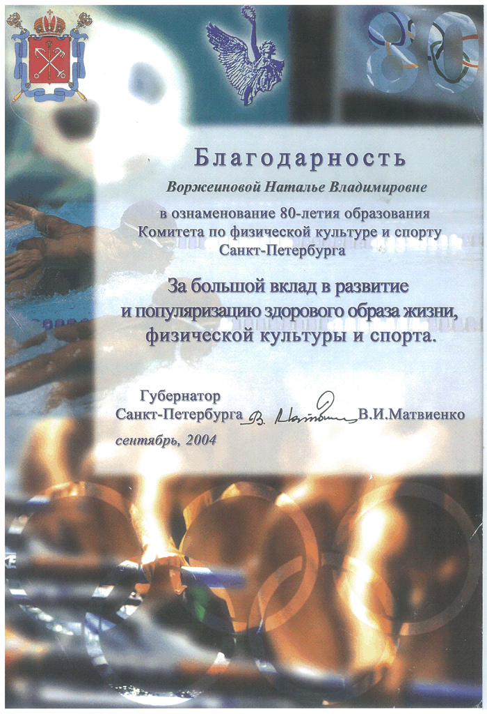

СТАТЬИ
Руки выше, три-четыре
статья из журнала "Каталог 365" за апрель 2008
Аквааэробика - одно из самых эффективных средств, чтобы накануне пляжного сезона похудеть и привести в чувство измученное затяжной зимою тело. Корреспондент "365" побывал на одном из водных занятий в бассейне "Наташа" и на собственном опыте убедился в живительной силе воды.
Секрет популярности
Этот вид фитнеса доступен многим, упражнения в воде не сложны для выполнения, считается, что аквааэробика более эффективна, чем обычная гимнастика, так как основой является преодоление сопротивления воды. Особенностью занятий в воде является и то, что движения совершаются не типично, а сразу в нескольких плоскостях. Поэтому в тренировке оказываются задействованными те группы мышц, которые обычно не получают нагрузки. Таким образом,аквааэробика позволяет быстро избавиться от лишних килограммов и укрепить мышцы.
Целебный эффект
На сегодняшний день аквааэробика - один из самых эффективных способов избавления от целлюлита, замечательная зарядка для суставов, а благодаря тому, что температура воды и бассейне на 8-10 градусов ниже температуры тела и ему волей-неволей приходится расставаться с жировыми запасами, дабы, простите, не околеть, - еще и прекрасный жиросжигатель. Кроме того, давление воды улучшает и стимулирует циркуляцию крови по телу, а также кровоснабжение сердечно-сосудистой системы. К тому же вода - хороший массажист, поэтому после посещения занятий в бассейне кожа становится упругой и эластичной. Плюс - естественное увлажнение!
Минздрав рекомендует
Важно и то, что аквааэробика является малотравматичным видом фитнеса. Именно поэтому занятия рекомендуют пожилым людям, беременным женщинам, людям, имеющим проблемы с позвоночником, венами и суставами. Занятия в воде помогают расслабиться, снимают мышечное и нервное напряжение, укрепляют нервную систему. Перед началом занятия рекомендуется немного поплавать, чтобы разогреться, привыкнуть водной среде и температуре воды. Затем идет разминка, упражнения основного комплекса и серия восстановительных упражнений. Как вариант, в основной комплекс могут быть включены упражнения; которые укрепляют сердечно-сосудистую систему, вырабатывают выносливость и мышечную силу, развивают гибкость тела. Время и интенсивность занятий зависят от состава группы и подготовленности занимающихся.
Текст: Ирма Джаошвнлн
Почему бассейн?
Что и говорить: наша жизнь весьма беспокойная.
Дейл Карнеги в своей книге «как перестать беспокоиться и начать жить» приводит убеждение человека, пережившего кораблекрушение: « Если у вас достаточно питьевой воды, беспокоиться совершенно не о чем». В этом плане мы вполне счастливые люди, т.к. не только в избытке располагаем водой для питья, умывания и хозяйственных нужд, но и можем подарить себе такое чудо, как плавание в бассейне.
Окружающая действительность, требуя большей стрессоустойчивости и физической выносливости, сохранению здоровья мало соответствует. Мы слишком много сидим - на работе, в автомобиле, перед ТВ, не замечая, как мало-помалу расслабляется мышечный корсет, нарушается осанка, сдавливаются и смещаются внутренние органы, нарушается ритм дыхания и сердца. Все знают, на сколько полезны регулярные нагрузки, но перед малоактивными людьми, решившими вернуть телу былую выносливость, возникает опасность физических перегрузок. В этом случае идеальным способом оздоровления являются упражнения в воде. Это самый щадящий вид тренировок, особенно подходящий для людей с лишним весом, проблемами суставов и позвоночника. Во время плавания человек находиться как бы в состоянии невесомости, которое разгружает опорно-двигательную систему от давления на нее веса тела. Благодаря сопротивлению воды укрепляется вся скелетная мускулатура. Особенно выигрывает спина. У регулярно плавающих людей увеличивается емкость легких, сердце работает мощно и экономно, насыщенная кислородам кровь быстрее транспортируется ко всем органам. Кроме этого плавание является эффективным средством закаливания, повышения устойчивости к вирусным заболеваниям. Вода, мягко обтекая тело, массирует находящиеся в коже и мышцах нервные окончания, успокаивает, снимает утомление. После плавания человек легче засыпает, крепче спит, улучшается внимание и память. Приятные ассоциации, связанные с плаванием, положительно сказываются на состоянии психики, формируют положительный эмоциональный фон.
Научиться плавать можно в любом возрасте. Наши профессиональные инструктора за несколько занятий научат любому стилю плавания. Альтернативой плаванию является аквааэробика. Музыка, энергичный тренер, похожий на ди-джея на дискотеке, череда разнообразных упражнений в воде, специальный инвентарь превращают аквааэробику в своеобразное веселое модно-музыкальное шоу. Не зря большинство посетительниц отмечают, что занятия в воде гораздо интереснее, чем простые тренировки в зале. За счет преодоления сопротивления воды мышцы приходят в тонус, а тело быстрее обретает очертания. Теплоемкость воды в 4 раза больше, а теплопроводность в 25 раз выше, чем воздуха. Поэтому в воде тело человека отдает на 50-80% больше тепла, чем на воздухе. Ускоряется обмен веществ, что способствует потере веса. Специалисты считают занятия в воде лучшим способом реабилитации после травм и нарушений опорно-двигательного аппарата. Плавание и физические упражнения в воде рекомендуют своим пациентам травматологи, ревматологи и другие врачи. Погружаясь в воду, человек отрешается от внешних проблем, расслабляется, сосредотачивается на ощущениях себя, своего тела, то есть создает условия для медитации- достижения гармонии ума и тела, воплощения идеального представления о самом себе.
Вода - волшебная стихия- дарит возможность избавиться от болезней, недомоганий, депрессий, помогает обрести новые силы и выносливость.
